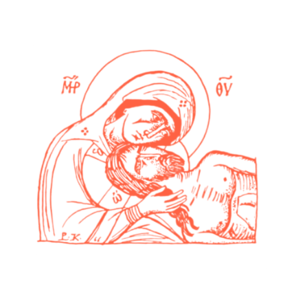

"When I look back on my past and think how much time I wasted on nothing, how much time has been lost in futilities, errors, laziness, incapacity to live; how little I appreciated it, how many times I sinned against my heart and soul—then my heart bleeds. Life is a gift, life is happiness, every minute can be an eternity of happiness." ~ Fyodor Dostoevsky
Know me